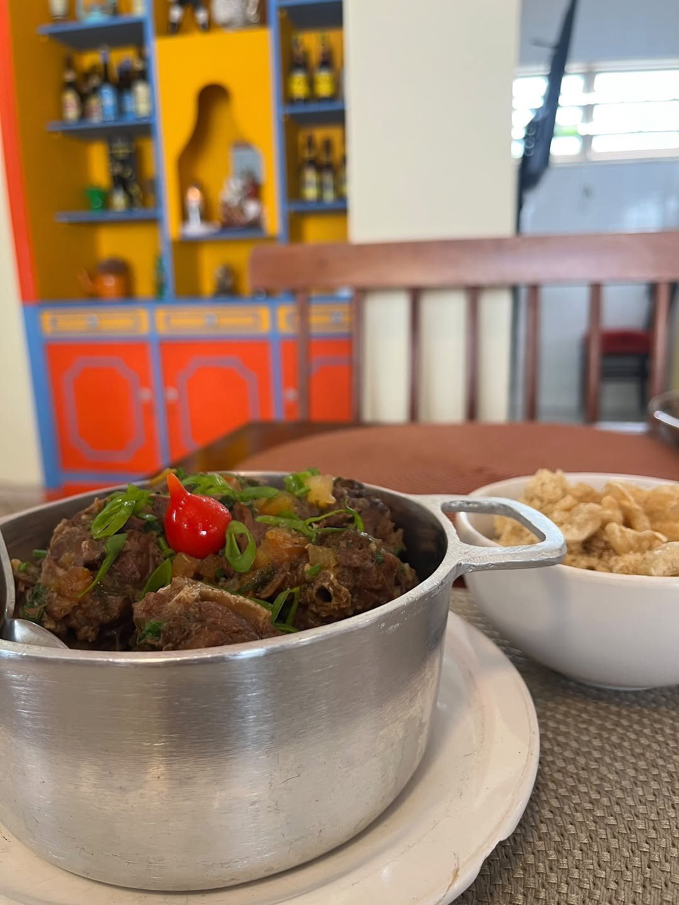
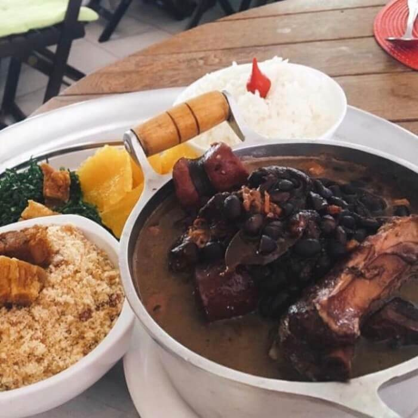
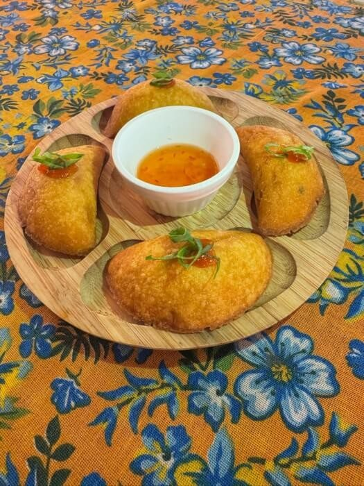
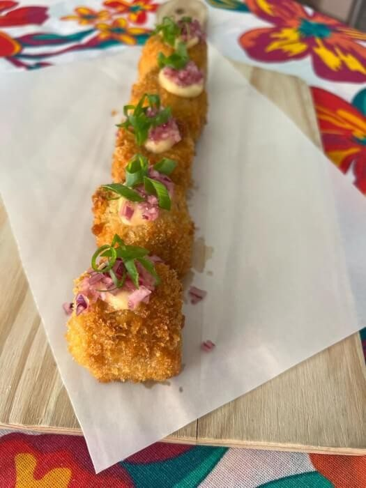
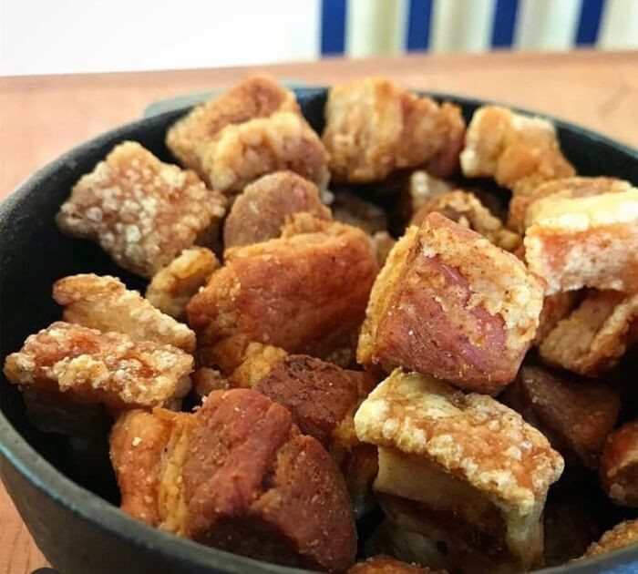
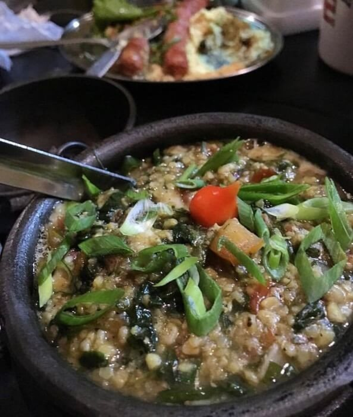
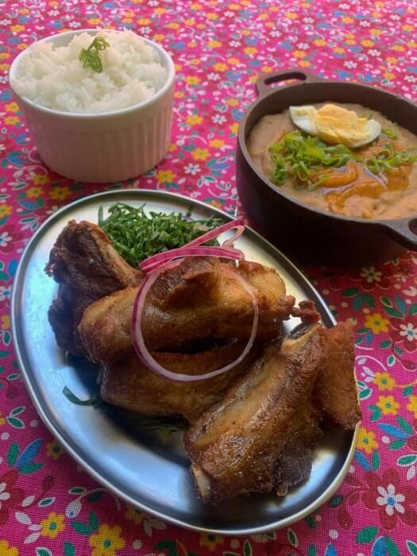
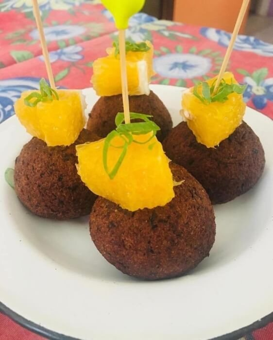
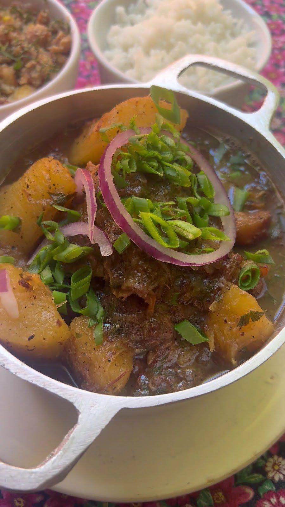

Galinha Caipira
“Comida de panela, feita com calma e com aquele gostinho de casa.” Serve 3 pessoas: tradicional, ensopada ou ao molho pardo.
Pituba Salvador · cozinha de Minas
Torresmo de barriga, pastel de angu, tutu, vaca atolada e café passado no coador. Porco “vindo de MG”, receitas de família e uma vendinha com queijo canastra e doce de leite de Viçosa para levar.

Por onde começar
O link da ficha do Google abre o Saipos como “Mesa 95”. Neste site, o cardápio abre no celular com busca, o prato de cada dia fica à vista e a vendinha ganha prateleira própria.
Petiscos, pratos mineiros para um e para dois, executivos, doces, café, cachaça e drinks.
Abrir o cardápioCada dia, um saborQuarta, quinta, sexta e fim de semana: o prato do dia anunciado pela casa.
Ver a semanaVendinha mineiraQueijo canastra, doce de leite de Viçosa, goiabada, jiló em conserva e cachaça.
Ir à vendinhaAvise que vemDia, horário e quantas pessoas. A mensagem chega pronta e a casa confirma.
Avisar a casaCada dia, um sabor
“Cada dia, um sabor. Toda semana, um motivo para voltar.”Instagram @taiobha, 21/09/2026
“Comida de panela, feita com calma e com aquele gostinho de casa.” Serve 3 pessoas: tradicional, ensopada ou ao molho pardo.

“Bife de porco, linguiça mineira, ovo frito, banana-da-terra, couve, arroz temperadinho e tutu.”

“Daquelas que reúnem a mesa e fazem a conversa durar mais um pouquinho.”

Costela de ripa bovina ao forno, pernil suíno ao molho de rapadura flambado na cachaça, frango com quiabo.
Pratos do dia anunciados pela casa no Instagram; preço no salão. Segunda e terça, a casa fica fechada. A semana inteira
Feito aqui
Massa de angu de fubá frita, canjiquinha de pilão, torresmo que a casa chama de “pipoca de mineiro” e “barrinha de cereais de mineiro”. O porco, avisa o cardápio, vem de Minas.

Massa de angu de fubá frita com goiabada cascão e queijo da Serra da Canastra. 4 unidades · R$ 46,00.

Canjiquinha com carne suína, empanado e frito até ficar dourado e crocante. 6 unidades · R$ 40,25.

Torresmo suíno frito em cubos, a “pipoca de mineiro”. R$ 43,70.

Canjiquinha cremosa com costela suína, queijo canastra derretendo e espinafre, no caldeirão de ferro. R$ 55,00.

Costela suína frita, arroz e feijão de tutu flambado na cachaça mineira. P/1 R$ 68,20 · P/2 R$ 134,20.

Bolinho caseiro frito com recheio de couve e bacon. 4 unidades · R$ 40,25.
Vendinha mineira caipira
Na saída do almoço, a prateleira da vendinha. Toque em “+” e monte a encomenda: a lista vai pronta para o WhatsApp da casa, para retirar no balcão, sem comissão de aplicativo.
Preços do cardápio da casa no Saipos (05/10/2026), sujeitos a alteração. A equipe confirma disponibilidade e retirada pelo WhatsApp. Ver a vendinha inteira
Comida di Buteco 2026
“Empadinha de angu, recheado com pernil suíno com ora-pro-nóbis e ricota com taioba.”Página oficial do Taiobha no Comida di Buteco
O Taiobha participou da edição de 2026 em Salvador, ao lado de outros bares e restaurantes da cidade e de Lauro de Freitas, como registrou o g1.
Sobre o Duas Minas
A história
“Trouxemos na nossa bagagem culinária de família, da fartura, da roça, de fogão à lenha, culinária caseira artesanal.”“Quem somos”, site da casa
Quem já sentou à mesa
Experiência boa demais. Ambiente simples e acolhedor. … tira-gostos muito bons e as comidas deliciosas. O café, no final, com bolo de milho foi espetacular.
Variedade de opções... petiscos, pratos fantásticos e sobremesas deliciosas.
Comida deliciosa, tempero no ponto, ambiente gostoso!
Trechos de avaliações públicas do Google; nota e total consultados na ficha da casa em 05/10/2026.
Galeria
Fotos publicadas pela casa (Instagram, ficha do Google e cardápio). Toque para ampliar.
Avise que vem
“Chama a turma, a família ou aquela pessoa especial e vem prosear.” Aqui o cliente escolhe o dia, o horário e quantas pessoas vêm, conta o prato que não quer perder, e a mensagem chega organizada no WhatsApp da casa.
Dúvidas frequentes
A casa não publica um sistema de reservas. Avise que vem pelo WhatsApp (71) 98880-3636: a equipe responde e confirma conforme o movimento.
Pela ficha do Google: quarta e quinta, 12h às 17h; sexta, 12h às 20h; sábado e domingo, 12h às 18h. Segunda e terça, fechado.
Pelo Instagram da casa: quarta, galinha caipira; quinta, virado à paulista; sexta, feijoada mineira; sábado e domingo, cardápio variado.
Os pratos mineiros têm versão P/1 (R$ 68,20) e P/2 (R$ 134,20). A feijoada completa, o pernil e a costela de ripa são para dois; a galinha caipira serve três.
Sim: a vendinha tem queijo canastra, doces, requeijão, pão de queijo congelado, jiló em conserva e cachaça na garrafa. Encomende pelo WhatsApp e retire no balcão.
Sim. “Aceitamos PIX”, diz a casa. Outras formas de pagamento: confirme pelo WhatsApp.
Uai, sô
Almoço de quarta a domingo, na casa de fachada laranja da Pituba. Avise que vem pelo WhatsApp e a casa responde.